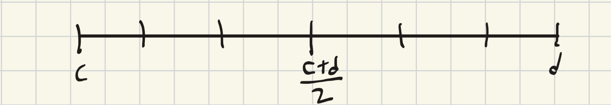

Math 61 - Week 2
Prop:
\(\{a_n\}^\infty_{n=1}\subseteq{\mathbb{R}}\) is a convergent sequence. Then \(\{a_n\}^\infty_{n=1}\) is bounded.
Proof (click to expand)
Pf: WTS \(\exists c>0\) s.t. \(|a_n|\leq{c}\) for all \(n\geq{N}\)
Using the definition of convergence with \(\varepsilon=1, \exists{L}\in{\mathbb{R}}\) and \(N\in{\mathbb{N}}\) s.t. \(|a_n-L|<{1}\forall{n>N}\)
Hence \(|a_n|\leq{\max\{|L|+1,|a_1|,|a_2|,...,|a_{N+1}|\}}=c\qquad\blacksquare\)
We will now prove a very important theorem in real analyis, but first observe the following...
Consider a sequence \(-1,1,-1,1,-1,1,...\) that is bdd but not convergent. We can observe that if we remove a lot of terms, the remaining sequence is convergent.
Def Subsequence
If \(\{a_n\}^\infty_{n=1}\subseteq\mathbb{R}\) is a sequence, call \[\{a_{f(k)}\}^\infty_{k=1}\text{ a subsequence of }a\text{ if }f\text{ is a fcn }f:\mathbb{N}\to\mathbb{N}\text{ and }f(k)<{f(k+1)}\]
Notation: Often we write using \(\{a_{n(k)}\}^\infty_{n=1}\) or \(\{a_{n_k}\}_{k=1}^\infty\)
Theorem: Bolzano-Weierstrass
Any bdd sequence is \(\mathbb{R}\) has a convergent subsequence.
Proof (click to expand)
Let \(\{a_n\}^\infty_{n=1}\subseteq{\mathbb{R}}\) and suppose \(c\leq{a_n}\leq{d}\), for all \(n\in{\mathbb{N}}\)
One interval clearly has infinetly many terms.
Let \([c_1,d_1]\) be \([c,\frac{c+d}{2}]\) or \([\frac{c+d}{2},d]\) s.t. \([c_1,d_1]\) has infinetly many terms and \(a_{n(1)}\in[c_1,d_1]\)
Using the same idea has before, let \([c_2,d_2]\) be \([c_1,\frac{c_1+d_1}{2}]\) or \(\frac{c_1+d_1}{2},d_1\) s.t. \([c_2,d_2]\) has infinetly many terms and take \(a_{n(2)}\in[c_2,d_2]\) with \(n(2)>n(1)\)
Continuing this process we see that \([c,d]\supseteq[c_1,d_1]\supseteq[c_2,d_2]\supseteq...\)
Noticing that \(d_k-c_k=\frac{d-c}{2^k}\) and there exists a subsequence \(\{a_{n(k)}\}^\infty_{n=1}\) s.t. \(a_{n(k)}\in[c_k,d_k]\), we first want to prove two things.
Claim 1: \(\{c_k\}^\infty_{k=1}\) is convergent and converges to \(L\)
Pf: Since \(\{c_k\}_{k=1}^\infty\) is an increasing sequence that is bdd above so by lemma last week, it is convergent.
Claim 2: \(\lim_{k\to\infty}{a_{n(k)}}=L\)
Pf. Let \(\varepsilon>0\). Observe
- \(\exists{K_1}\in{\mathbb{N}}\text{ s.t. }|c_k-L|<\frac{\varepsilon}{2}\text{ for all }{k\geq{K_1}}\)
- \(\exists{K_2}\in\mathbb{N}\text{ s.t. }2^{-k}<\frac{1}{k}<\frac{\varepsilon}{2(d-c)}\text{ for all }k\geq{k_2}\)
Now we simply choose \(k=\max(k_1,k_2)\) and use triangle inequality:
\[|a_{n(k)}-L|=|(a_{n(k)}-c_k)+(c_k+L)|\leq|a_{n(k)}-c_k|+|c_k-L|\leq{\frac{d-c}{2^k}}+|c_k-L|<\varepsilon\]
Lemma: Limit Laws
Statement and Proof (click to expand)
You should have learned these in calc and proof is left as an exercise to the reader ;)
Lemma:
If \(\lim_{n\to\infty}a_n=A,\lim_{n\to\infty}b_n=B\), and \(a_n<{b_n}\) for all \(n\in{\mathbb{N}}\) then \(A\leq{B}\)
Rmk: It doesn't imply \(A<{B}\) (ex. consider \(a_n=0,b_n=\frac{1}{n})\)
Proof (click to expand)
Assume not for the sake of contradiction. Then \(A>B\)
By definition of limits:
\[|a_n-A|<\frac{A-B}{2}\text{ for all }n\geq{N_1}\]
\[|b_n-B|<\frac{A-B}{2}\text{ for all }n\geq{N_2}\]
If we choose \(n\geq{\max\{N_1,N_2\}}\), we know that
\[a_n>A-\frac{A-B}{2}\geq{B+\frac{A-B}{2}}>b_n\]
However, this is a contradiction so \(A\geq{B}\)
Continuous Functions
Intuitively, continuous functions are something like this:

You may also remember a definition of continuity that involves not lifting up a pen when drawing a function.
Here we will define it rigorously:
First we will define the notion of a limit:
Given a function \(f[a,b]\to\mathbb{R}\)
\[\text{If }c\in[a,b]\text{ we say }\lim_{x\to{c}}=L\text{ if for all }\varepsilon>0, \text{ there exists }\delta>0\text{ s.t. }\]\[|f(x)-L|<\epsilon\text{ whenever }|x-c|<\delta\text{ and }x\in[a,b]\]
\(f\) is continuous at \(c\) if \(\lim_{x\to{c}}f(x)=f(c)\).
\[\text{ie., for all }\varepsilon>0,\text{ there exists }\delta>0\text{ s.t. }|f(x)-f(c)|<\varepsilon\text{ whenever }|x-c|<\delta\]
Lemma:
Suppose \(f[a,b]\to\mathbb{R}\text{ continuous at }c\in[a,b]\)
Then for any sequence, \[\{x_n\}_{n=1}^\infty\subseteq{\mathbb{R}}\text{ s.t. }x_n\in[a,b]\,\text{and }\lim_{n\to\infty}x_n=c, \text{ it holds that }\lim_{n\to{\infty}}f(x_n)=f(c)\]
Proof (click to expand)
We WTS there exists \(N\in\mathbb{N}\) s.t. \(|f(x_n)-f(c)|<\varepsilon\) for all \(n\geq{N}\)
By continuity, there exists \(\delta>0\) s.t. \(|f(x)-f(c)|<\varepsilon\) whenever \(|x-c|<\delta\)
We also know that \(\lim_{n\to{\infty}}x_n=c\) which means there exists \(N\in\mathbb{N}\) s.t. \(|x_n-c|<\delta\) for all \(n>N\)
Combining, we get \(|f(x_n)-f(c)|<\varepsilon\) for all \(n\in\mathbb{N}\)
Rmk: The converse is all true.
Thm:
Suppose \(f:[a,b]\to\mathbb{R}\) is continuous. Then
- 1. \(f\) is bounded (ie. \(\{f(x):x\in[a,b]\}\))
- 2. \(f\) achieves max and min \((\exists\,c_1,c_2\text{ s.t. }f(c_1)\leq{f(x)}\leq{f(c_2)})\)
Proof (click to expand)
Pf #1: Assume not for the sake of contradiction.